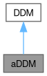

#include <addm.h>
Inheritance diagram for aDDM:

Collaboration diagram for aDDM:

Public Member Functions | |
| aDDM (float d, float sigma, float theta, float barrier, unsigned int nonDecisionTime=0, float bias=0) | |
| Construct a new aDDM object. | |
| double | getTrialLikelihood (aDDMTrial trial, bool debug=false, int timeStep=10, float approxStateStep=0.1) |
| Compute the likelihood of the data for a single trial given aDDM Parameters. | |
| aDDMTrial | simulateTrial (int valueLeft, int valueRight, FixationData fixationData, int timeStep=10, int numFixDists=3, fixDists fixationDist={}, vector< int > timeBins={}) |
| Generate simulated fixations provided item values and empirical fixation data. | |
 Public Member Functions inherited from DDM Public Member Functions inherited from DDM | |
| DDM (float d, float sigma, float barrier, unsigned int nonDecisionTime=0, float bias=0) | |
| DDM () | |
| double | getTrialLikelihood (DDMTrial trial, bool debug=false, int timeStep=10, float approxStateStep=0.1) |
| DDMTrial | simulateTrial (int ValueLeft, int ValueRight, int timeStep=10) |
Public Attributes | |
| float | theta |
| Public Attributes inherited from DDM | |
| float | d |
| float | sigma |
| float | barrier |
| unsigned int | nonDecisionTime |
| float | bias |
Detailed Description
Constructor & Destructor Documentation
◆ aDDM()
| aDDM::aDDM | ( | float | d, |
| float | sigma, | ||
| float | theta, | ||
| float | barrier, | ||
| unsigned int | nonDecisionTime = 0, |
||
| float | bias = 0 |
||
| ) |
Construct a new aDDM object.
- Parameters
-
d drift rate. sigma noise or standard deviation for the normal distribution. theta ranges on [0,1] and indicates level of attentional bias. barrier positive magnitude of the signal thresholds. nonDecisionTime amount of time in milliseconds in which only noise is added to the decision variable. bias corresponds to the initial value of the decision variable. Must be smaller than barrier.
Definition at line 42 of file addm.cpp.
43 :
46}
Member Function Documentation
◆ getTrialLikelihood()
| double aDDM::getTrialLikelihood | ( | aDDMTrial | trial, |
| bool | debug = false, |
||
| int | timeStep = 10, |
||
| float | approxStateStep = 0.1 |
||
| ) |
Compute the likelihood of the data for a single trial given aDDM Parameters.
- Parameters
-
trial aDDMTrial object. debug True if state variables should be printed for debugging purposes timeStep value in milliseconds used for binning the time axis. approxstateStep used for binning the RDV axis.
- Returns
- double representing the likelihood for the given trial.
Definition at line 48 of file addm.cpp.
48 {
49 if (debug) {
50 std::cout << std::setprecision(6) << std::fixed;
51 }
52 std::vector<int> correctedFixItem = trial.fixItem;
53 std::vector<int> correctedFixTime = trial.fixTime;
60 if (remainingNDT > 0) {
61 correctedFixItem.push_back(0);
62 correctedFixTime.push_back(min(remainingNDT, fTime));
63 correctedFixItem.push_back(fItem);
64 correctedFixTime.push_back(max(fTime - remainingNDT, 0));
65 } else {
66 correctedFixItem.push_back(fItem);
67 correctedFixTime.push_back(fTime);
68 }
69 }
70 }
71
72 if (debug) {
73 std::cout << "CFI" << std::endl;
74 for (int i : correctedFixItem) {
75 std::cout << i << std::endl;
76 }
77 std::cout << "------" << std::endl;
78 std::cout << "CFT" << std::endl;
79 for (int t : correctedFixTime) {
80 std::cout << t << std::endl;
81 }
82 std::cout << "------" << std::endl;
83 }
84
85 int numTimeSteps = 0;
86 for (int fTime : correctedFixTime) {
87 numTimeSteps += fTime / timeStep;
88 }
89 if (numTimeSteps < 1) {
90 throw std::invalid_argument("Trial response time is smaller than time step");
91 }
92 numTimeSteps++;
93
94 std::vector<float> barrierUp(numTimeSteps);
95 std::fill(barrierUp.begin(), barrierUp.end(), this->barrier);
96 std::vector<float> barrierDown(numTimeSteps);
97 std::fill(barrierDown.begin(), barrierDown.end(), -this->barrier);
98 for (int i = 1; i < numTimeSteps; i++) {
101 }
102
105 std::vector<float> states;
106 for (float ss = barrierDown.at(0) + (stateStep / 2); ss <= barrierUp.at(0) - (stateStep / 2); ss += stateStep) {
107 states.push_back(ss);
108 }
109
110 float biasStateVal = MAXFLOAT;
111 int biasState = 0;
112 for (int i = 0; i < states.size(); i++) {
113 float r = abs(states.at(i) - this->bias);
114 if (r < biasStateVal) {
115 biasState = i;
116 biasStateVal = r;
117 }
118 }
119
120 // Initialize an empty probability state grid
121 std::vector<std::vector<double>> prStates; // prStates[state][timeStep]
122 for (int i = 0; i < states.size(); i++) {
123 prStates.push_back({});
124 for (int j = 0; j < numTimeSteps; j++) {
125 prStates.at(i).push_back(0);
126 }
127 }
128
129 // Initialize vectors corresponding to the probability of crossing the
130 // top or bottom barriers at each timestep.
131 std::vector<double> probUpCrossing;
132 std::vector<double> probDownCrossing;
133 for (int i = 0; i < numTimeSteps; i++) {
134 probUpCrossing.push_back(0);
135 probDownCrossing.push_back(0);
136 }
137 prStates.at(biasState).at(0) = 1;
138
139 int time = 1;
140
141 // Initialize a change matrix where each value at (i, j)
142 // indicates the difference between states[i] and states[j]
143 std::vector<std::vector<float>> changeMatrix(states.size(), std::vector<float>(states.size()));
144 for (size_t i = 0; i < states.size(); i++) {
145 for (size_t j = 0; j < states.size(); j++) {
146 changeMatrix[i][j] = states[i] - states[j];
147 }
148 }
149 if (debug) {
150 printMatrix<float>(changeMatrix, "CHANGE MATRIX");
151 }
152
153 // Distance from every state to the top barrier at each timestep
154 std::vector<std::vector<float>> changeUp(states.size(), std::vector<float>(numTimeSteps));
155 for (size_t i = 0; i < states.size(); i++) {
156 for (size_t j = 0; j < numTimeSteps; j++) {
157 changeUp[i][j] = barrierUp[j] - states[i];
158 }
159 }
160 if (debug) {
161 printMatrix<float>(changeUp, "CHANGE UP");
162 }
163
164
165 // Distance from every state to the bottom barrier at each timestep
166 std::vector<std::vector<float>> changeDown(states.size(), std::vector<float>(numTimeSteps));
167 for (size_t i = 0; i < states.size(); i++) {
168 for (size_t j = 0; j < numTimeSteps; j++) {
169 changeDown[i][j] = barrierDown[j] - states[i];
170 }
171 }
172 if (debug) {
173 printMatrix<float>(changeDown, "CHANGE DOWN");
174 }
175
176 assert(correctedFixItem.size() == correctedFixTime.size());
177 for (int i = 0; i < correctedFixItem.size(); i++) {
178 int fItem = correctedFixItem[i];
179 int fTime = correctedFixTime[i];
180
181 if (debug) {
182 std::cout << "============" << std::endl;
183 std::cout << "fItem " << i << ": " << fItem << std::endl;
184 std::cout << "fTime " << i << ": " << fTime << std::endl;
185 std::cout << "============" << std::endl;
186 }
187
188 float mean;
189 if (fItem == 1) {
191 }
192 else if (fItem == 2) {
194 }
195 else {
196 mean = 0;
197 }
198
199 for (int t = 0; t < fTime / timeStep; t++) {
200 // Compute the likelihood of each change in the matrix using a probability density function with parameters mean and sigma.
201 std::vector<std::vector<double>> probDistChangeMatrix(states.size(), std::vector<double>(states.size()));
202 for (size_t i = 0; i < states.size(); i++) {
203 for (size_t j = 0; j < states.size(); j++) {
204 float x = changeMatrix[i][j];
206 }
207 }
208 if (debug) {
209 printMatrix<double>(probDistChangeMatrix, "PROBABILITY CHANGE MATRIX");
210 }
211
212 // Fetch the probability states for the previous timeStep
213 std::vector<double> prTimeSlice(states.size());
214 for (size_t i = 0; i < states.size(); i++) {
215 prTimeSlice[i] = prStates[i][time - 1];
216 }
217
218 // Compute the dot product between the change matrix and previous timeStep's probabilities
219 std::vector<double> prStatesNew(states.size());
220 for (size_t i = 0; i < states.size(); i++) {
221 double row_sum = 0;
222 for (size_t j = 0; j < states.size(); j++) {
223 row_sum += stateStep * probDistChangeMatrix[i][j] * prTimeSlice[j];
224 }
225 prStatesNew[i] = row_sum;
226 }
227
228 // Check for states that are now out-of-bounds based on decay
229 for (int i = 0; i < states.size(); i++) {
230 if (states[i] > barrierUp[time] || states[i] < barrierDown[time]) {
231 prStatesNew[i] = 0;
232 }
233 }
234 if (debug) {
235 std::cout << "PR STATES NEW" << std::endl;
237 std::cout << d << std::endl;
238 }
239 std::cout << "------" << std::endl;
240 }
241
242 std::vector<float> currChangeUp;
243 for (auto s : changeUp) {
244 currChangeUp.push_back(s.at(time));
245 }
246 std::vector<double> changeUpCDFs;
247 for (int i = 0; i < currChangeUp.size(); i++) {
248 float x = currChangeUp[i];
249 changeUpCDFs.push_back(
251 );
252 }
253 assert(changeUpCDFs.size() == prTimeSlice.size());
254 double tempUpCross = 0;
255 for (int i = 0; i < prTimeSlice.size(); i++) {
256 tempUpCross += changeUpCDFs[i] * prTimeSlice[i];
257 }
258
259 std::vector<float> currChangeDown;
260 for (auto s: changeDown) {
261 currChangeDown.push_back(s.at(time));
262 }
263 std::vector<double> changeDownCDFs;
264 for (int i = 0; i < currChangeDown.size(); i++) {
265 float x = currChangeDown[i];
266 changeDownCDFs.push_back(
268 );
269 }
270 assert(changeDownCDFs.size() == prTimeSlice.size());
271 double tempDownCross = 0;
272 for (int i = 0; i < prTimeSlice.size(); i++) {
273 tempDownCross += changeDownCDFs[i] * prTimeSlice[i];
274 }
275
276 double sumIn = 0;
277 for (double prob : prTimeSlice) {
278 sumIn += prob;
279 }
280 double sumCurrent = tempUpCross + tempDownCross;
281 for (double prob : prStatesNew) {
282 sumCurrent += prob;
283 }
284 double normFactor = sumIn / sumCurrent;
285 for (int i = 0; i < prStatesNew.size(); i++) {
286 prStatesNew[i] *= normFactor;
287 }
288 tempUpCross *= normFactor;
289 tempDownCross *= normFactor;
290 for (int i = 0; i < prStates.size(); i++) {
291 prStates[i][time] = prStatesNew[i];
292 }
293 probUpCrossing[time] = tempUpCross;
294 probDownCrossing[time] = tempDownCross;
295
296 time++;
297 }
298 }
299 double likelihood = 0;
301 if (probUpCrossing[probUpCrossing.size() - 1] > 0) {
302 likelihood = probUpCrossing[probUpCrossing.size() - 1];
303 }
304 }
306 if (probDownCrossing[probDownCrossing.size() - 1] > 0) {
307 likelihood = probDownCrossing[probDownCrossing.size() - 1];
308 }
309 }
310 return likelihood;
311}
double probabilityDensityFunction(float mean, float sigma, float x)
Definition util.cpp:25
double cumulativeDensityFunction(float mean, float sigma, float x)
Definition util.cpp:31
◆ simulateTrial()
| aDDMTrial aDDM::simulateTrial | ( | int | valueLeft, |
| int | valueRight, | ||
| FixationData | fixationData, | ||
| int | timeStep = 10, |
||
| int | numFixDists = 3, |
||
| fixDists | fixationDist = {}, |
||
| vector< int > | timeBins = {} |
||
| ) |
Generate simulated fixations provided item values and empirical fixation data.
- Parameters
-
valueLeft value of the left item valueRight value of the right item fixationData instance of a FixationData object containing empirical fixation data timeStep value of in milliseconds used for binning time axis. numFixDists number of expected fixations in a given trial fixationDist distribution of the fixation data being used timeBins predetermined time bins as used in the fixationDist
- Returns
- aDDMTrial resulting from the simulation
Definition at line 313 of file addm.cpp.
315 {
316
317 srand(time(NULL));
318
319 std::map<int, int> fixUnfixValueDiffs;
320 fixUnfixValueDiffs.insert({1, valueLeft - valueRight});
321 fixUnfixValueDiffs.insert({2, valueRight - valueLeft});
322 std::vector<int> fixItem;
323 std::vector<int> fixTime;
324 std::vector<float> fixRDV;
325
326 std::random_device rd;
327 // std::mt19937 gen(SEED);
328 std::mt19937 gen(rd());
329
331 int time = 0;
332 int choice;
333 int uninterruptedLastFixTime;
334 int RT;
335
336 std::vector<float>RDVs = {RDV};
337
338 std::uniform_int_distribution<std::size_t> ludist(0, fixationData.latencies.size() - 1);
339 int rIDX = ludist(gen);
342
343 // std::mt19937 gen(SEED);
344
345 for (int t = 0; t < latency / timeStep; t++) {
346 std::normal_distribution<float> ndist(0, this->sigma);
347 float inc = ndist(gen);
348 RDV += inc;
349 RDVs.push_back(RDV);
350
352 if (RDV >= this->barrier) {
353 choice = -1;
354 } else {
355 choice = 1;
356 }
357 fixRDV.push_back(RDV);
358 fixItem.push_back(0);
359 int dt = (t + 1) * timeStep;
360 fixTime.push_back(dt);
361 time += dt;
362 RT = time;
363 uninterruptedLastFixTime = latency;
365 RT, choice, valueLeft, valueRight,
366 fixItem, fixTime, fixRDV, uninterruptedLastFixTime);
367 }
368 }
369
370 fixRDV.push_back(RDV);
371 RDVs.push_back(RDV);
372 fixItem.push_back(0);
373 int dt = latency - (latency % timeStep);
374 fixTime.push_back(dt);
375 time += dt;
376
377 int fixNumber = 1;
378 int prevFixatedItem = -1;
379 int currFixLocation = 0;
380 bool decisionReached = false;
381 float currFixTime;
382
383 while (true) {
384 if (currFixLocation == 0) {
385 if (prevFixatedItem == -1) {
386 std::discrete_distribution<> ddist({fixationData.probFixLeftFirst, 1 - fixationData.probFixLeftFirst});
387 currFixLocation = ddist(gen) + 1;
388 } else if (prevFixatedItem == 1) {
389 currFixLocation = 2;
390 } else if (prevFixatedItem == 2) {
391 currFixLocation = 1;
392 }
393 prevFixatedItem = currFixLocation;
394 // ASSUMING WE ARE USING FIXATION DATA DIST FOR NOW
395 if (fixationDist.empty()) {
396 // ASSUMING SIMPLE
398 vector<float> fixTimes = fixationData.fixations.at(fixNumber);
399 std::uniform_int_distribution<std::size_t> fudist(0, fixTimes.size() - 1);
400 rIDX = fudist(gen);
401 currFixTime = fixTimes.at(rIDX);
402 } else {
403 throw std::invalid_argument("not implemented");
404 }
405 }
406 if (fixNumber < numFixDists) {
407 fixNumber++;
408 }
409 }
410 else {
411 currFixLocation = 0;
412 rIDX = rand() % fixationData.transitions.size();
413 currFixTime = fixationData.transitions.at(rIDX);
414 }
415 if (remainingNDT > 0) {
416 for (int t = 0; t < remainingNDT / timeStep; t++) {
417 std::normal_distribution<float> ndist(0, this->sigma);
418 float inc = ndist(gen);
419 RDV += inc;
420 RDVs.push_back(RDV);
421
423 if (RDV >= this->barrier) {
424 choice = -1;
425 } else {
426 choice = 1;
427 }
428 fixRDV.push_back(RDV);
429 fixItem.push_back(currFixLocation);
430 int dt = (t + 1) * timeStep;
431 fixTime.push_back(dt);
432 time += dt;
433 RT = time;
434 uninterruptedLastFixTime = currFixTime;
435 decisionReached = true;
436 break;
437 }
438 }
439 }
440 if (decisionReached) {
441 break;
442 }
443 float remainingFixTime = max(0.0f, currFixTime - max(0, remainingNDT));
444 remainingNDT -= currFixTime;
445
446 for (int t = 0; t < round(remainingFixTime / timeStep); t++) {
447 float mean;
448 if (currFixLocation == 0) {
449 mean = 0;
450 } else if (currFixLocation == 1) {
452 } else if (currFixLocation == 2) {
454 }
455 std::normal_distribution<float> ndist(mean, this->sigma);
456 float inc = ndist(gen);
457 RDV += inc;
458 RDVs.push_back(RDV);
459
461 if (RDV >= this->barrier) {
462 choice = -1;
463 } else {
464 choice = 1;
465 }
466 fixRDV.push_back(RDV);
467 fixItem.push_back(currFixLocation);
468 int dt = (t + 1) * timeStep;
469 fixTime.push_back(dt);
470 time += dt;
471 RT = time;
472 uninterruptedLastFixTime = currFixTime;
473 decisionReached = true;
474 break;
475 }
476 }
477
478 if (decisionReached) {
479 break;
480 }
481
482 fixRDV.push_back(RDV);
483 fixItem.push_back(currFixLocation);
484 int cft = round(currFixTime);
485 int dt = cft - (cft % timeStep);
486 fixTime.push_back(dt);
487 time += dt;
488 }
489
490 aDDMTrial trial = aDDMTrial(RT, choice, valueLeft, valueRight, fixItem, fixTime, fixRDV, uninterruptedLastFixTime);
491 trial.RDVs = RDVs;
492 trial.timeStep = timeStep;
493 return trial;
494}
Member Data Documentation
◆ theta
The documentation for this class was generated from the following files: